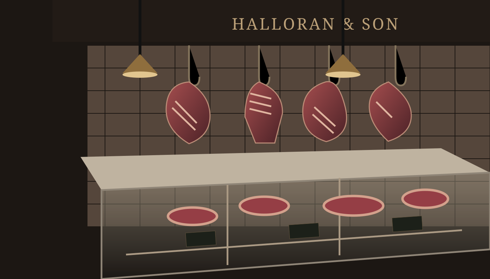

Traditional Cork sausage
Pork shoulder, white pepper, rusk, natural casing. Contains wheat.

CORK CITY · FAMILY BUTCHERS SINCE 1961
Whole carcass. Dry-aged on the bone. Cut to order.
And an honest word when a cheaper cut is the better choice.
Ballynoe Farm11 MILES · HEREFORD BEEF
Cloonmore18 MILES · LAMB
Ardra Pig Co.24 MILES · SADDLEBACK PORK
Glenview Poultry9 MILES · FREE RANGE
TODAY'S COUNTER
Good meat. Proper advice.
Illustrative counter and prices.
Select a cut to add a draft quantity. Final weight and price confirmed at the shop.
THE AGEING ROOM
A room at one degree. Controlled humidity. Plenty of airflow. A great deal of patience while about a fifth of the weight evaporates. That loss is why aged beef costs more, and why it tastes like something.
Illustrative batches with fixed start dates. Day counts follow your device clock and do not indicate real stock.
SAUSAGES & CHARCUTERIE
Pork shoulder, white pepper, rusk, natural casing. Contains wheat.
Coarse pork, garlic, red wine, black pepper.
Lamb, harissa, cumin, coriander.
Oats, onion, allspice. Grandmother's recipe, kept in the family.
Twelve days in salt, then hung.
Pork neck, cured ninety days. Sliced to order.
Ask the shop about allergens and preparation before ordering.
A GOOD PLACE TO START
Roughly 3.5kg. Roasting joint, mince, sausages, chops and a braising cut. Two people, generously.
Roughly 3kg. Two dry-aged steaks, burgers, marinated lamb, spatchcock chicken and sausages.
Roughly 4kg. Shoulder, shin, cheek and short rib. Everything that rewards four hours and a low oven.
Boxes are a starting point. Ring us and swap what you need. No subscription is created here.
ASK THE BUTCHER
Whichever one you cook properly. Nervous? Sirloin is cheaper and more forgiving than fillet, with plenty of flavour.
Resting matters. A few minutes for a steak, longer for a joint. Ask us for advice specific to your cut and follow safe cooking guidance.
Yes. We vacuum pack free. Freeze fresh meat promptly on the day of purchase and follow the storage label. Thaw safely in the fridge.
Ox cheek, shin and shoulder reward low heat, time and plenty of liquid. The cheapest meat can make the best meal.
FROM OUR COUNTER TO YOUR TABLE
A NOTE FOR THE COUNTER
Choose cuts above. We will weigh, price and confirm directly.
This is a browser-only draft. Nothing is sent or reserved.
Estimated total €0.00
THE DOOR IS OPEN
There is a queue on Saturday between ten and half twelve.
It moves faster than it looks, and it is worth it.
Tuesday to Friday 8:00–18:00
Saturday 8:00–16:00
Sunday & Monday Closed
074 555 0129
Fictional shop contact details from the brief.